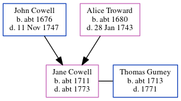

Jane Gurney (née Cowell) c1711 - c1773
[ Home ] | [ Calendar ] | [ Surnames Index ] | [ Errors ] | [ Family History ]The child of John Cowell (a yeoman) and Alice Troward, Jane Cowell, the six times great-aunt of Nigel Horne, was born in Margate, Kent, England c. 1711 and baptised there at St John the Baptist Church on 4 Jul 1711. She married Thomas Gurney there at St John the Baptist Church on 29 May 17321.
She died c. 1773 in Margate and was buried there at St John the Baptist Church on 4 Apr 17732,3.
Parents
- John was born c. 1676
- Alice was born c. 1680
Citations
- Kent, England, Tyler Index to Parish Registers, 1538-1874 Online publication - Provo, UT, USA: Ancestry.com Operations, Inc., 2010. This collection was indexed by Ancestry World Archives Project contributors.Original data - Frank Watt Tyler. The Tyler Collection. Canterbury, Kent, England: The Institute of Herald
- Kent, Canterbury Archdeaconry Burials - Findmypast
- Kent, Canterbury Archdeaconry Burials - Findmypast
Media
England Marriages 1538-1973 - R_847893539/2
Canterbury Burials - GBPRS/CANT/D/95160494
England Marriages 1538-1973 - R_848439635/2
England Marriages 1538-1973 - R_848612532/2
Kent, Canterbury Archdeaconry burials - GBPRS/CANT/D/95007059
Family Tree
Map
Generated by ged2site. Last updated on Jul 3, 2024
Known Issues
Birth date (abt 1711) has no citations
Death date (abt 1773) has no citations